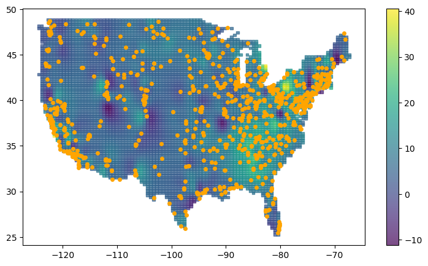
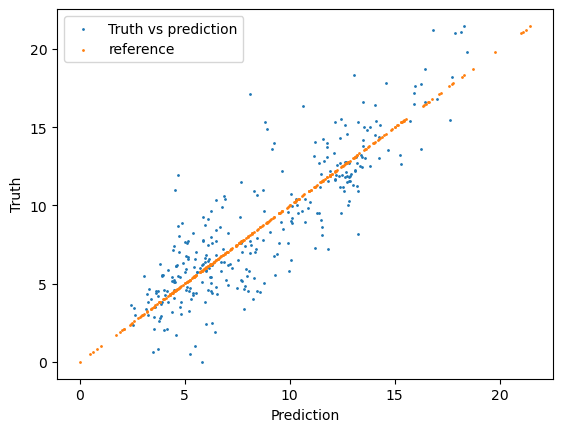
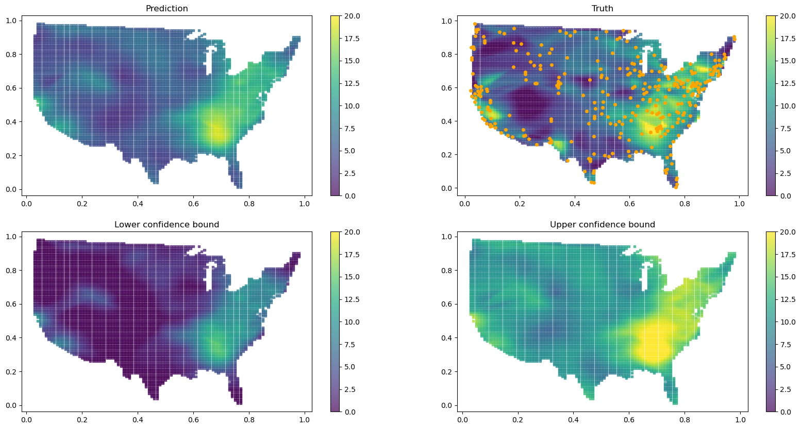

Example realdata
%load_ext autoreload
%autoreload 2
import torch
import geospaNN
import numpy as np
import time
import pandas as pd
import seaborn as sns
import matplotlib.pyplot as plt
import matplotlib.image as img
import geopandas as gpd
from shapely.geometry import Point
from scipy import spatial, interpolate
import warnings
warnings.filterwarnings("ignore")
url = "https://www2.census.gov/geo/tiger/GENZ2018/shp/cb_2018_us_nation_20m.zip"
us = gpd.read_file(url).explode()
us = us.loc[us.geometry.apply(lambda x: x.exterior.bounds[2])<-60]
df_covariates = pd.read_csv('./data/covariate0605.csv')
df_pm25 = pd.read_csv('./data/pm25_0605.csv')
df_pm25 = df_pm25.loc[df_pm25.Latitude < 50]
x_min,y_min,x_max,y_max = np.array([np.min(df_covariates['long']), np.min(df_covariates['lat']),
np.max(df_covariates['long']), np.max(df_covariates['lat'])])
arr1 = np.mgrid[x_min:x_max:101j, y_min:y_max:101j]
# extract the x and y coordinates as flat arrays
arr1x = np.ravel(arr1[0])
arr1y = np.ravel(arr1[1])
# using the X and Y columns, build a dataframe, then the geodataframe
df = pd.DataFrame({'X':arr1x, 'Y':arr1y})
df['coords'] = list(zip(df['X'], df['Y']))
df['coords'] = df['coords'].apply(Point)
gdf = gpd.GeoDataFrame(df, geometry=gpd.points_from_xy(x=df.X, y=df.Y),crs = us.crs)
inUS = gdf['geometry'].apply(lambda s: s.within(us.geometry.unary_union))
lonlat_pm25=df_pm25.values[:,[1,2]]
near = df_covariates.values[:,[1,2]]
tree = spatial.KDTree(list(zip(near[:,0].ravel(), near[:,1].ravel())))
idx = tree.query(lonlat_pm25)[1]
df_pm25_mean = df_pm25.assign(neighbor = idx).groupby('neighbor')['PM25'].mean()
idx_new = df_pm25_mean.index.values
pm25 = df_pm25_mean.values
z = pm25[:,None]
lon = df_covariates.values[:,1]
lat = df_covariates.values[:,2]
f = interpolate.Rbf(lon[idx_new], lat[idx_new], z, function = 'inverse')
x_test = gdf.loc[inUS,:].X
y_test = gdf.loc[inUS,:].Y
z_test = f(x_test, y_test)
plt.clf()
fig, ax = plt.subplots(figsize=(9, 5))
c = ax.scatter(x = x_test, y = y_test, s = 10, c = z_test, marker = 's', alpha = 0.7)
ax.plot(np.array(df_pm25['Longitude']), np.array(df_pm25['Latitude']), 'o', c = 'orange', markersize = 4)
ax.set_title('')
fig.colorbar(c, ax=ax)
plt.show()
<Figure size 640x480 with 0 Axes>

lon = df_covariates.values[:,1]
lat = df_covariates.values[:,2]
covariates = df_covariates.values[:,3:]
normalized_lon = (lon-min(lon))/(max(lon)-min(lon))
normalized_lat = (lat-min(lat))/(max(lat)-min(lat))
normalized_x_test = (x_test-min(lon))/(max(lon)-min(lon))
normalized_y_test = (y_test-min(lat))/(max(lat)-min(lat))
s_obs = np.vstack((normalized_lon[idx_new],normalized_lat[idx_new])).T
X = covariates[idx_new,:]
normalized_X = X
for i in range(X.shape[1]):
normalized_X[:,i] = (X[:,i]-min(X[:,i]))/(max(X[:,i])-min(X[:,i]))
X = normalized_X
Y = z.reshape(-1)
coord = s_obs
#columns = ['precipitation', 'temperature', 'air pressure', 'relative humidity', 'U-wind', 'V-wind',
# 'PM 2.5', 'longitude', 'latitude']
#df = pd.DataFrame(data=data, index=range(data.shape[0]), columns=columns)
#df.to_csv('./data/Normalized_PM2.5_20190605.csv')
data_PM25 = pd.read_csv("./data/Normalized_PM2.5_20190605.csv")
data_PM25
| Unnamed: 0 | precipitation | temperature | air pressure | relative humidity | U-wind | V-wind | PM 2.5 | longitude | latitude | |
|---|---|---|---|---|---|---|---|---|---|---|
| 0 | 0 | 0.008044 | 0.362296 | 0.887664 | 0.774197 | 0.868530 | 0.781498 | 5.020834 | 0.980311 | 0.906268 |
| 1 | 1 | 0.005516 | 0.355305 | 0.882153 | 0.751742 | 0.864206 | 0.770715 | 3.837500 | 0.983093 | 0.889762 |
| 2 | 2 | 0.000000 | 0.335323 | 0.928359 | 0.714189 | 0.697080 | 0.813224 | 2.041666 | 0.974238 | 0.814722 |
| 3 | 3 | 0.000000 | 0.338579 | 0.954218 | 0.690767 | 0.625266 | 0.868161 | 3.669444 | 0.976951 | 0.798275 |
| 4 | 4 | 0.002528 | 0.293827 | 0.893599 | 0.685830 | 0.688808 | 0.842395 | 1.020833 | 0.945193 | 0.800337 |
| ... | ... | ... | ... | ... | ... | ... | ... | ... | ... | ... |
| 600 | 600 | 0.393932 | 0.901079 | 0.972022 | 0.910279 | 0.642436 | 0.469410 | 5.168750 | 0.469337 | 0.101640 |
| 601 | 601 | 0.000689 | 0.810329 | 0.897414 | 0.539392 | 0.553265 | 0.464926 | 6.041666 | 0.436702 | 0.098054 |
| 602 | 602 | 0.294415 | 0.882501 | 0.972022 | 0.822590 | 0.642248 | 0.469353 | 8.704166 | 0.468665 | 0.090378 |
| 603 | 603 | 0.011492 | 0.811830 | 0.965240 | 0.719028 | 0.676463 | 0.512429 | 8.725000 | 0.460179 | 0.035680 |
| 604 | 604 | 0.256952 | 0.775792 | 0.975837 | 0.802168 | 0.696516 | 0.509137 | 8.213636 | 0.470595 | 0.032926 |
605 rows × 10 columns
X = torch.from_numpy(data_PM25[['precipitation', 'temperature', 'air pressure', 'relative humidity', 'U-wind', 'V-wind']].to_numpy()).float()
Y = torch.from_numpy(data_PM25[['PM 2.5']].to_numpy().reshape(-1)).float()
coord = torch.from_numpy(data_PM25[['longitude', 'latitude']].to_numpy()).float()
p = X.shape[1]
n = X.shape[0]
nn = 20
batch_size = 50
X, Y, coord, _ = geospaNN.spatial_order(X, Y, coord, method = 'max-min')
data = geospaNN.make_graph(X, Y, coord, nn)
torch.manual_seed(2024)
np.random.seed(0)
data_train, data_val, data_test = geospaNN.split_data(X, Y, coord, neighbor_size = 20,
test_proportion = 0.5)
start_time = time.time()
mlp_nn = torch.nn.Sequential(
torch.nn.Linear(p, 50),
torch.nn.ReLU(),
torch.nn.Linear(50, 20),
torch.nn.ReLU(),
torch.nn.Linear(20, 1),
)
nn_model = geospaNN.nn_train(mlp_nn, lr = 0.01, min_delta = 0.001)
training_log = nn_model.train(data_train, data_val, data_test)
Epoch 00031: reducing learning rate of group 0 to 5.0000e-03.
theta0 = geospaNN.theta_update(torch.tensor([1, 1.5, 0.01]), mlp_nn(data_train.x).squeeze() - data_train.y, data_train.pos, neighbor_size = 20)
mlp_nngls = torch.nn.Sequential(
torch.nn.Linear(p, 100),
torch.nn.ReLU(),
torch.nn.Linear(100, 50),
torch.nn.ReLU(),
torch.nn.Linear(50, 20),
torch.nn.ReLU(),
torch.nn.Linear(20, 10),
torch.nn.ReLU(),
torch.nn.Linear(10, 1),
)
model = geospaNN.nngls(p=p, neighbor_size=nn, coord_dimensions=2, mlp=mlp_nngls, theta=torch.tensor(theta0))
nngls_model = geospaNN.nngls_train(model, lr = 0.01, min_delta = 0.001)
training_log = nngls_model.train(data_train, data_val, data_test,
Update_init = 20, Update_step = 10)
end_time = time.time()
Theta updated from
[1. 1.5 0.01]
Epoch 00020: reducing learning rate of group 0 to 5.0000e-03.
Theta updated from
[10.29591688 10.3716713 0.20216037]
to
[11.32370202 8.14642528 0.15268137]
Epoch 00029: reducing learning rate of group 0 to 2.5000e-03.
Theta updated from
[11.32370202 8.14642528 0.15268137]
to
[10.57182313 8.82062549 0.15966506]
INFO: Early stopping
End at epoch32
print(f"\rRunning time: {end_time - start_time} seconds")
Running time: 7.1364500522613525 seconds
[test_predict, test_U, test_L] = model.predict(data_train, data_test, CI = True)
plt.clf()
plt.scatter(test_predict.detach().numpy(), data_test.y.detach().numpy(), s = 1, label = 'Truth vs prediction')
plt.scatter(data_test.y.detach().numpy(), data_test.y.detach().numpy(), s = 1, label = 'reference')
plt.xlabel("Prediction")
plt.ylabel("Truth")
plt.legend()
plt.show()

f_pred = interpolate.CloughTocher2DInterpolator(list(zip(data_test.pos.detach().numpy()[:,0],
data_test.pos.detach().numpy()[:,1])),
test_predict.detach().numpy())
f_U = interpolate.CloughTocher2DInterpolator(list(zip(data_test.pos.detach().numpy()[:,0],
data_test.pos.detach().numpy()[:,1])),
test_U.detach().numpy())
f_L = interpolate.CloughTocher2DInterpolator(list(zip(data_test.pos.detach().numpy()[:,0],
data_test.pos.detach().numpy()[:,1])),
test_L.detach().numpy())
f_true = interpolate.CloughTocher2DInterpolator(list(zip(data_test.pos.detach().numpy()[:,0],
data_test.pos.detach().numpy()[:,1])),
data_test.y.detach().numpy())
titles = np.array([['Prediction', 'Truth'], ['Lower confidence bound', 'Upper confidence bound']])
f_vec = np.array([[f_pred, f_true], [f_L, f_U]])
fig, ax = plt.subplots(2, 2, figsize=(20, 10))
for i in range(2):
for j in range(2):
im = ax[i,j].scatter(x = normalized_x_test, y = normalized_y_test, s = 9,
c = f_vec[i,j](normalized_x_test, normalized_y_test), marker = 's', alpha = 0.7,
vmin=0, vmax=20)
ax[i,j].title.set_text(titles[i,j])
fig.colorbar(im)
#cbar_ax = fig.add_axes([0.85, 0.15, 0.05, 0.7])
ax[0,1].plot(data_test.pos.detach().numpy()[:,0],
data_test.pos.detach().numpy()[:,1], 'o', c = 'orange', markersize = 4)
plt.show()

variable_names = ['Precipitation accumulation', 'Air temperature', 'Pressure', 'Relative humidity', 'U-wind', 'V-wind']
geospaNN.plot_PDP(model, X, variable_names)